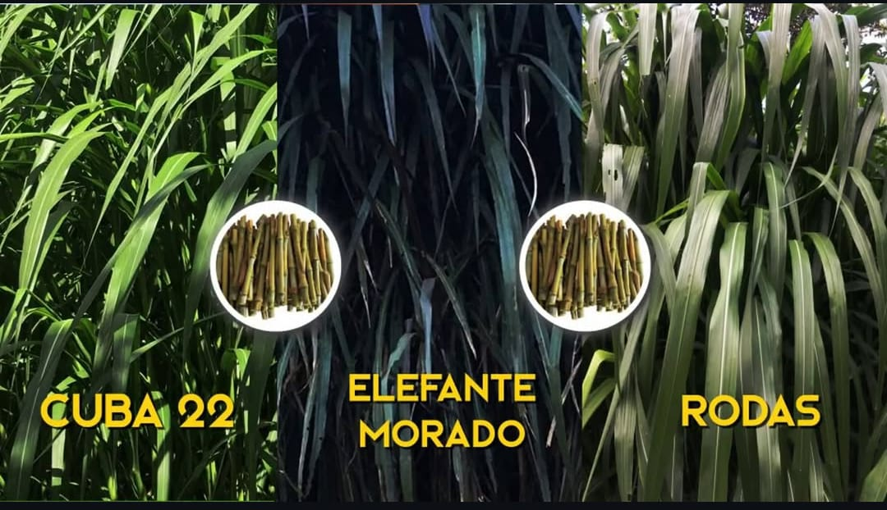

01Semillas de Pastos de Corte de Alta Calidad
Ofrecemos semillas de pastos especialmente seleccionadas para garantizar un crecimiento rápido y nutritivo, ideales para mejorar la alimentación de su ganado o para proyectos de paisajismo.
Características:
- Variedades resistentes y de alto rendimiento.
- Ideal para diferentes tipos de climas y suelos.
- Fácil siembra y mantenimiento.
¡Maximice la producción y calidad de su pastoreo!